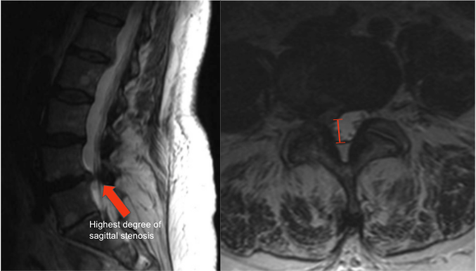

Adapted from: Feger J, Er A, Yap J, et al. Lumbar spine protocol (MRI). Reference article, Radiopaedia.org (Accessed on 01 Jan 2026) https://doi.org/10.53347/rID-147093
1) Description of Measurement
Lumbar AP canal diameter quantifies the anteroposterior dimension of the central spinal canal and is a standard morphologic measurement for diagnosing lumbar spinal stenosis. It reflects the available space for the cauda equina and is reduced by disc bulge, facet hypertrophy, ligamentum flavum thickening, or spondylolisthesis.
This measurement is most reliable on axial T2-weighted MRI, where cerebrospinal fluid provides natural contrast.
2) Instructions to Measure
3) Normal vs. Pathologic Ranges
Key points:
4) Important References
Abel F, Tan ET, Chazen JL, et al. MRI after Lumbar Spine Decompression and Fusion Surgery: Technical Considerations, Expected Findings, and Complications. Radiology. 2023 Jul;308(1):e222732. doi: 10.1148/radiol.222732.
Hansen BB, Nordberg CL, Hansen P, et al. Weight-bearing MRI of the Lumbar Spine: Spinal Stenosis and Spondylolisthesis. Semin Musculoskelet Radiol. 2019 Dec;23(6):621-633. doi: 10.1055/s-0039-1697937.
Genevay S, Atlas SJ. Lumbar spinal stenosis. Best Pract Res Clin Rheumatol. 2010 Apr;24(2):253-65. doi: 10.1016/j.berh.2009.11.001.
5) Other info....
Measurement should be interpreted alongside:
Central canal stenosis is dynamic and may worsen with extension.
Report: